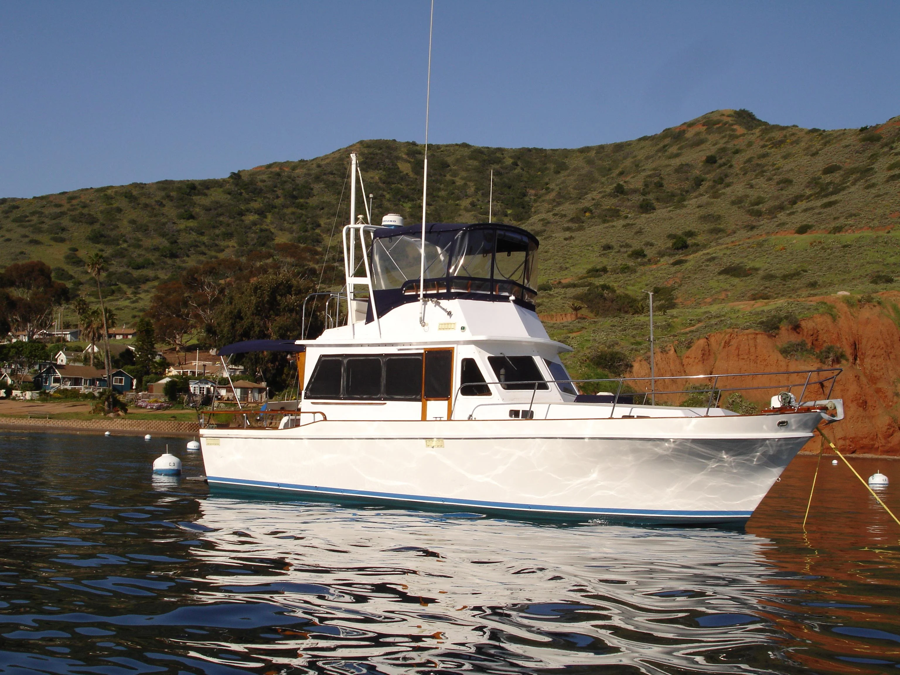

B-Scout Boat Guide · CALF-34-TR
Californian 34 LRC Long Range Cruiser
1977–1985
The Californian 34 LRC is a U.S.-built flybridge sedan cruiser with trawler-like styling but a modified-V hull capable of substantially more than displacement speed with higher-power diesel packages. Wide side decks and practical lower-helm layouts favor family coastal cruising rather than traditional full-displacement operation.

- Length
- 34.5 ft
- Beam
- 12.33 ft
- Draft
- 3.17 ft
- Hull behaviour
- Semi-Displacement
- Fuel
- Diesel
- Propulsion
- Shaft
- Engine configuration
- Twin Inboard
- Boat family
- Trawler
- Construction
- Fiberglass
Best for
- Buyers wanting classic trawler appearance without being limited to trawler speed
- Coastal cruising couples or families using a cockpit-oriented layout
- Owners who value simpler exterior trim than many Taiwan trawlers
Trade-offs
- Wide side decks reduce interior width
- Performance and fuel economy vary greatly with engine package
- Older machinery, tanks and deck hardware remain condition-sensitive
Known concerns
- No model-specific concern has been promoted to B-Scout’s evidence threshold. This does not mean the model has no age-, condition- or hull-specific risks.
Inspection focus
- Verify original versus repowered engine package and realistic cruise fuel burn
- Inspect decks, windows, cockpit and flybridge penetrations for moisture
- Inspect fuel tanks, exhaust, cooling and engine beds
- Inspect shafts, struts, rudders and steering
- Confirm lower-helm visibility and side-deck access for the intended crew
Continue researching
Related boat models
Californian 38 LRC Sedan Long Range Cruiser Sedan
37.67 ft · Semi-Displacement
American Tug 34
34.42 ft · Semi-Displacement
DeFever 34 Passagemaker Passagemaker
34.33 ft · Displacement
Back Cove 30 Downeast Cruiser
34.17 ft · Semi-Displacement
Cheoy Lee 35 Trawler Trawler
34.92 ft · Semi-Displacement
CHB 35 Sundeck Sundeck
35 ft · Semi-Displacement
About this record
B-Scout preserves uncertainty: missing information remains unknown rather than being treated as a negative. Specifications and guidance describe the model record; individual boats can differ by year, equipment, refit and condition.